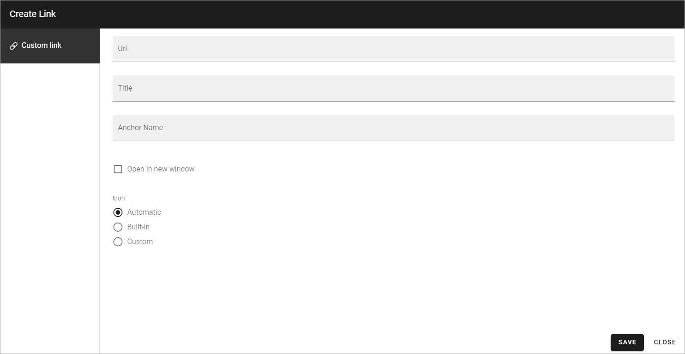

Add a link to the navigation tree¶
Using the option “Create link” you can add a link to the navigation, to anything you can reach with a link.
Select the page the link will be placed under (in the navigation).
Open the menu and select “Create link”.
The Add link general asset is opened and you use it to create the link.
See this page for more information (but note that you can only create a Custom link here): Add link